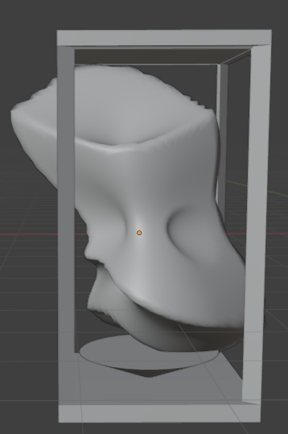
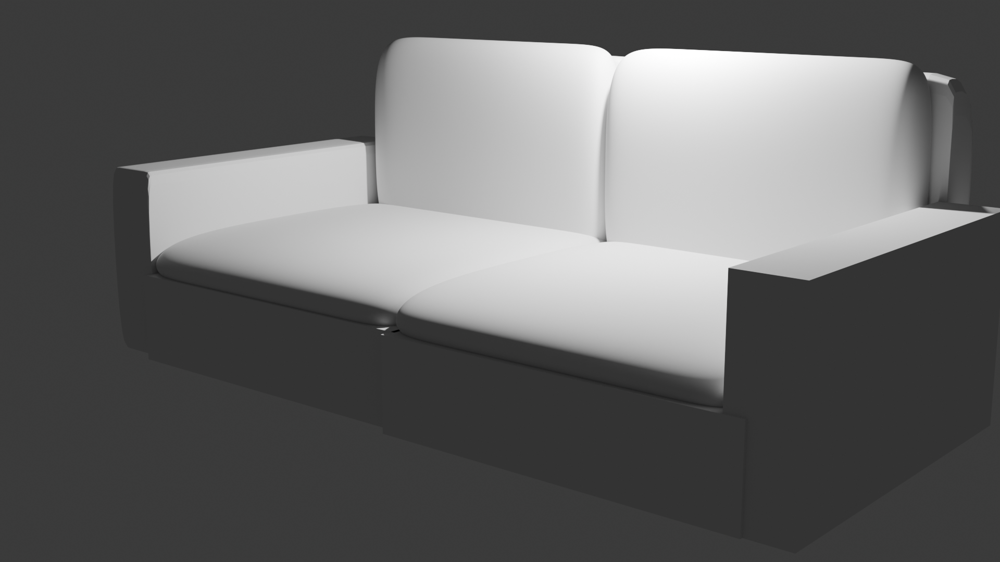
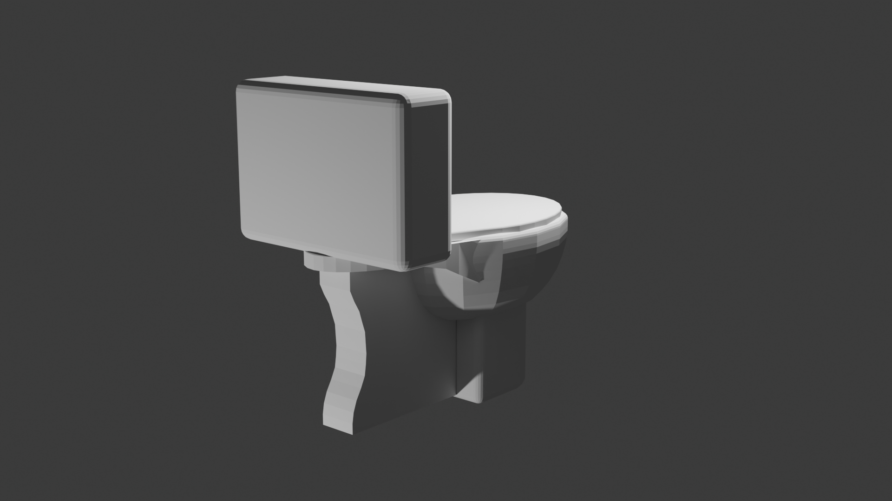
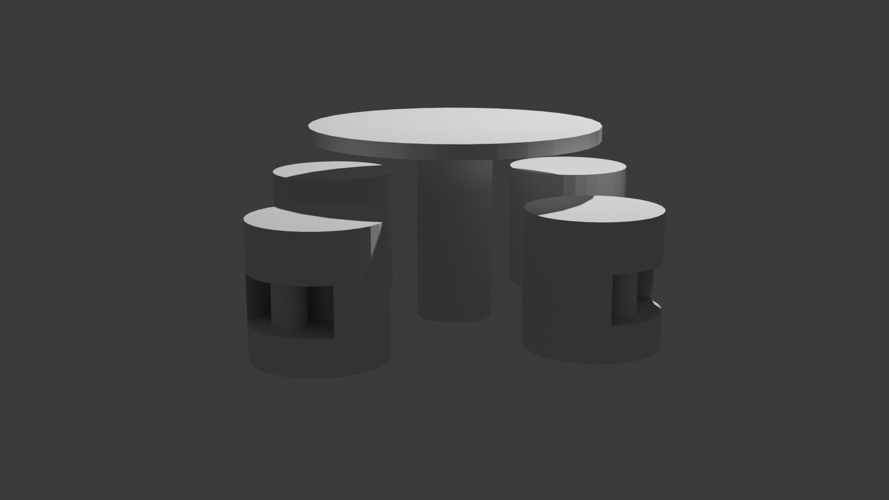

Modelado 3D de Mobiliario
Categoría: Modelado 3D y Renderizado
Descripción del Proyecto
Creación de modelos tridimensionales de piezas de mobiliario. En este proyecto me enfoqué en la precisión geométrica, las proporciones ergonómicas. El objetivo es lograr renders de alta calidad que permitan visualizar cómo cada mueble aporta funcionalidad y confort a un espacio.
Galería
Galería de Imágenes




